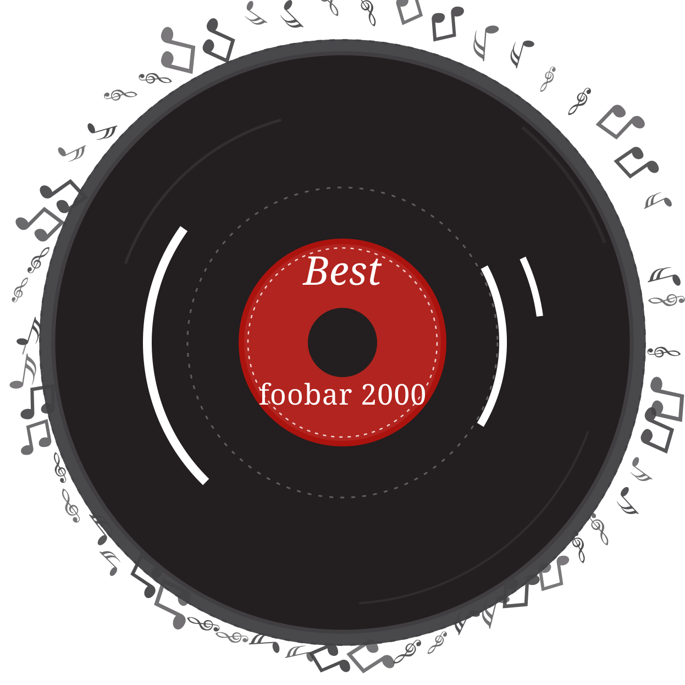

推荐
播放列表
媒体库
搜索
QQ 音乐
网易云
每日推荐
根据你的媒体库，为你随机挑选 30 首歌曲
推荐专辑
更多
随机推荐
换一批
最近添加
更多

PLAYLIST
播放列表
| # | 标题 | 艺术家 | 专辑 | 时长 | 比特率 |
|---|
输入关键词搜索媒体库
QQ 音乐在线音源
正在初始化页内桥接…
下载保存到
填入 QQ 音乐 Cookie（可选）
播放免费曲库不需要登录。想听 VIP 曲目和无损音质：在浏览器登录
y.qq.com 网页版 → 按 F12 打开开发者工具 → 控制台(Console) →
输入下面的命令回车（Cookie 会自动复制到剪贴板），再粘贴到下面保存。
Cookie 失效时（VIP 全部解析不到）回来重贴一次即可。
copy(document.cookie)
导入歌单（按曲目文本匹配）
每行一首：
歌名 - 歌手。点「复制导出脚本」→ 到 y.qq.com 的歌单页按 F12 →
控制台(Console) 粘贴回车，曲目会自动复制成这个格式（其他播放器 / 文本同类列表也认）。
官方已对账号歌单详情接口启用签名加密，故采用文本匹配方式。
粘贴到歌单页控制台运行 → 导出「歌名 - 歌手」清单
导入到歌单
输入关键词，搜索 QQ 音乐并直接在 foobar2000 里播放
第 1 页
跳至
页
网易云音乐在线音源
正在初始化页内桥接…
下载保存到
登录网易云（可选）
免费曲库不需要登录（多数 128K，部分 320K）。想听无损 FLAC 与会员曲目，
登录一次即可（Cookie 存在本地，失效时重登一次）。
登录态在
MUSIC_U 上，而它是 HttpOnly 的（控制台里
copy(document.cookie) 读不到，本地也没有副本）。
① 浏览器登录
也可从
music.163.com → ② F12 → 网络 / Network → 刷新页面 →
③ 任选一个请求右键 → 以 cURL 格式复制 / Copy as cURL → ④ 整条粘贴到下面保存（会自动挑出 Cookie）。也可从
应用 / Application → 存储 → Cookie → https://music.163.com 复制 MUSIC_U 的值。
导入歌单（按链接 / ID）
粘贴网易云歌单链接或 ID —— 公开歌单与官方榜单免登录就能读到全部曲目，
不用像 QQ 音乐那样导出文本再逐首匹配。
例：
例：
https://music.163.com/#/playlist?id=3778678 或直接 3778678。
单次上限 300 首；只有试听片段的会员曲目会被跳过并说明原因。
导入到歌单
输入关键词，搜索网易云音乐并直接在 foobar2000 里播放
第 1 页
跳至
页
播放队列